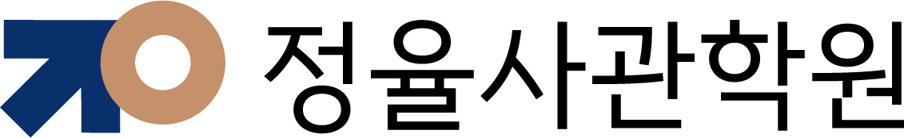
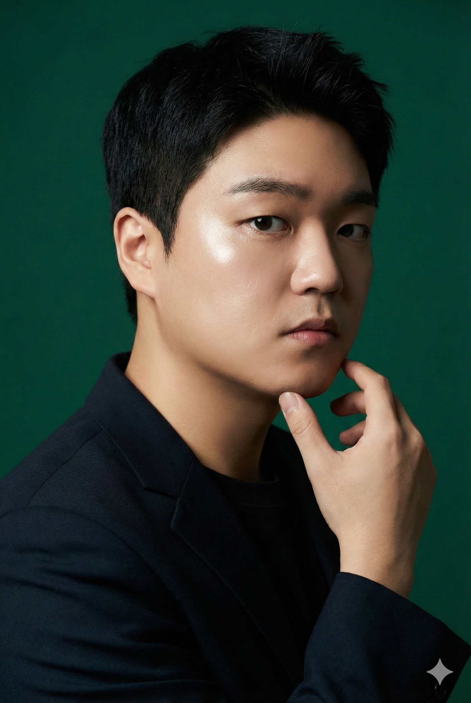
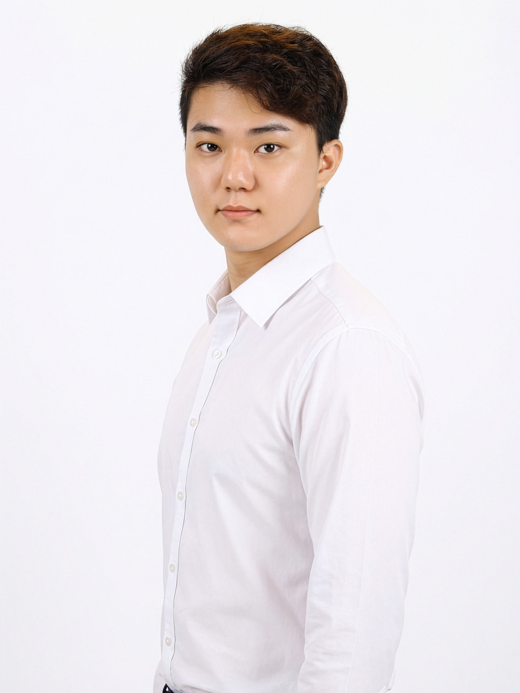

2026 정율사관학원 특별 설명회
예비고1을 위한
고교생활 완벽 로드맵
특별 설명회
고등학교 활동, 반드시 해야할 3가지
SCIENCE TEAM
정율사관학원
과학과 어벤저스
단순한 입시 컨설턴트가 아닌,
매일 현장에서 아이들을 가르치고 생기부를 만드는 전문가
TEAM LEADER

지성현 선생님
과학팀 총괄
과학고 출신 · 세특 전략 설계
과학고 출신의 학문적 깊이를 바탕으로
맞춤 세특 전략을 설계합니다.
- 통합과학, 생명과학, 화학 전문 지도
- 생기부 로드맵 설계 전문
- 부천·인천 지역 1등급 다수 배출
박주연 선생님
중등과학·통합과학 전담
세특 작성 · 탐구 활동 관리
탐구 주제 선정부터 보고서 완성까지
체계적으로 지도합니다.
- 세특 활동 지도 전문
- 통합과학 세특 탐구 전문
- 생기부 활동 전문 매니저

오동현 선생님
지구과학 · 물리 전담
학교별 내신 · 맞춤 문제 제작
학교별 출제 경향 분석으로
맞춤형 내신 대비 전략을 제시합니다.
- 학교별 기출 분석 문제 제작
- 개념~고난도 체계적 커리큘럼
- 학생별 맞춤 문제 제작
성적 실적
결과로 증명된
학교이름과목점수
도당고백○담통합과학100
부명고고○희통합과학100
부천고문○우지구과학100
부평고남○주통합과학100
상원고김○준통합과학100
상원고조○우통합과학100
상일고이○혁통합과학100
소명여고정○율통합과학100
송내고유○훈통합과학100
영선고이○현통합과학100
정명고김○헌통합과학100
중원고임○연통합과학100
중흥고정○후통합과학100
계남고남○후통합과학96
산곡고송○아통합과학95.7
도당고이○신화학95
심원고최○성통합과학94.5
상원고강○재통합과학93
상원고장○연화학91.6
상일고강○우통합과학91.4
학교이름과목점수
도당고백○담화학100
부천고강○후통합과학100
부천북고김○영화학100
부평고이○희통합과학100
상원고박○형통합과학100
상일고마○윤통합과학100
상일고최○은화학100
소명여고하○통합과학100
영선고박○영통합과학100
원미고김○호통합과학100
중원고어○연통합과학100
중흥고김○성통합과학100
도당고남○른화학98
계양고백○민통합과학96
부광고장○익화학95.7
대산고전○준통합과학94.8
부천북고김○영생명과학94
부천고문○우물리92
송내고전○원통합과학91.5
부평고나○민통합과학91.3
학교이름과목점수
부개고권○현통합과학100
부천고김○오통합과학100
부천여고임○연통합과학100
산곡고전○욱통합과학100
상원고장○연생명과학100
상일고이○준통합과학100
상정고김○준통합과학100
송내고김○표통합과학100
영선고박○우통합과학100
작전고최○승통합과학100
중원고이○원통합과학100
중흥고이○근통합과학100
도당고강○재통합과학96.1
부천고문○우지구과학95.8
상일고이○율통합과학95.4
상동고류○준통합과학94.5
중흥고박○준통합과학93.4
부천고장○규지구과학91.9
상일고이○우통합과학91.5
시온고서○서생명과학91.2
KEY MESSAGE
정율사관학원의 체계적인 관리 시스템이 만들어낸 결과입니다.
PART 1
입학 전 반드시 알아야 할
'내신·세특·수능'의 구조
지성현 팀장
STUDENT RECORD
고등학교 생기부의
핵심 2가지
01
내신 (교과 성적)
1~5등급 상대평가, 1학년부터 반영
수시 전형의 가장 핵심적인 평가 요소
02
세특 (세부능력 및 특기사항)
과목별 탐구 활동과 학업 역량 기록
입학사정관이 가장 주목하는 차별화 항목
KEY MESSAGE
내신과 세특, 이 두 가지를 1학년부터 전략적으로 준비해야 합니다.
지피지기 _ _ _ _
知彼知己 _ _ _ _
지피지기 백전불태
知彼知己 百戰不殆
상대를 알고 나를 알면, 백 번 싸워도 위태롭지 않다
— 손자병법(孫子兵法)
ANALYSIS
제대로 알아야
위태롭지 않다
2025 교육과정편제표 비교 (주요 교과 발췌)
상동고등학교
| 교과 |
1-1 |
학점 |
1-2 |
학점 |
합계 |
| 국어 |
공통국어1 |
4 |
공통국어2 |
4 |
8 |
| 수학 |
공통수학1 |
4 |
공통수학2 |
4 |
8 |
| 영어 |
공통영어1 |
4 |
공통영어2 |
4 |
8 |
| 사회 |
통합사회1 |
4 |
통합사회2 |
4 |
8 |
| 과학
|
통합과학1
+과탐실험1 |
4+1
|
통합과학2
+과탐실험2 |
4+1
|
10
|
상원고등학교
| 교과 |
1-1 |
학점 |
1-2 |
학점 |
합계 |
| 국어 |
공통국어1 |
4 |
공통국어2 |
4 |
8 |
| 수학 |
공통수학1 |
4 |
공통수학2 |
4 |
8 |
| 영어 |
공통영어1 |
4 |
공통영어2 |
4 |
8 |
| 사회 |
통합사회1 |
4 |
통합사회2 |
4 |
8 |
| 과학
|
통합과학1
+과탐실험1 |
4+1
|
통합과학2
+과탐실험2 |
4+1
|
10
|
KEY MESSAGE
대부분의 학교는 동일합니다. 궁금하신 학교는 문의해주세요.
과학은 내신 + 세특 + 과탐실험까지 총 10학점 — 고1 최대 비중 과목입니다.
CAREER & SCIENCE
세특의 핵심은 진로
희망 진로의 대부분은 탐구과목과 직접적으로 연관되어 있습니다.
2025 대학 학과(계열) 지원 비율 TOP 10
| 순위 |
학과(계열) |
비율 |
| 1
|
공학 |
17.9%
|
| 2 |
보건 |
14.5% |
| 3 |
예술 |
13.8% |
| 4 |
교육 |
13.4% |
| 5 |
생물학 및 관련 과학 |
11.1% |
| 6 |
경영 및 행정 |
7.5% |
| 7 |
사회과학 |
6.7% |
| 8 |
정보통신기술(ICTs) |
6.6% |
| 9 |
물리 과학 |
5.6% |
| 10 |
개인서비스 |
4.1% |
출처: 2025 교육통계
고등학생 희망 직업 TOP 10
| 순위 |
직업명 |
비율 |
| 1 |
교사 |
7.6% |
| 2 |
간호사 |
5.0% |
| 3
|
생명과학자 및 연구원 |
3.7%
|
| 4 |
보건·의료분야 기술직 |
2.9% |
| 5 |
경찰관/수사관 |
2.6% |
| 6 |
군인 |
2.5% |
| 7 |
회사원 |
2.4% |
| 8 |
뷰티디자이너 |
2.3% |
| 9 |
의사 |
2.3% |
| 10 |
운동선수 |
2.2% |
출처: 2025 학생 희망직업 조사
KEY MESSAGE
공학·보건·생명과학·ICT·의학 — 상위 진로의 과반이 과학탐구와 직결됩니다.
세특의 시작은 진로, 진로의 근거는 과학입니다.
2028 CSAT REFORM
2028 수능 개편,
통합과학이 필수가 됩니다
현 고2부터 적용 — 선택 없이 전원 통합과학 응시
| 영역 |
현행 (~2027) |
개편 (2028~) |
| 국어 |
공통(독서, 문학)
+ 2과목 중 택1 |
공통(화법과 언어, 독서와 작문, 문학) |
| 수학 |
공통(수학I, 수학II)
+ 3과목 중 택1 |
공통(대수, 미적분, 확률과 통계) |
| 영어 |
공통(영어I,
영어II) — 절대평가 유지 |
| 한국사 |
공통(한국사) —
절대평가 유지 |
|
탐구
|
17과목 중 최대 택2
사회 9과목, 과학 8과목 |
공통(통합사회)
통합과학
|
| 직업 |
1과목: 5과목 중 택1
2과목: 공통 + 1과목 |
공통(성공적인 직업생활) |
변경 핵심 1
탐구 영역 선택과목 폐지
통합사회·통합과학 전원 필수 응시
변경 핵심 2
문이과 구분 없이
과학을 피할 수 없는 구조
결론
내신 + 세특 + 수능
3중으로 중요한 과목
= 통합과학
KEY MESSAGE
2028 수능부터 통합과학은 전원 필수입니다.
내신·세특·수능, 3가지 모두에서 통합과학이 핵심이 됩니다.
PART 2
실제 사례로 보는
'합격하는 생기부'의 비밀
박주연 선생님
부천·인천 지역 고교 현실
관내 고교의 현실:
내 생기부는 '셀프' 작성
부천·인천 고등학교는 대부분 공립고로 구성되어 있어,
교사의 세특 작성 지원이 제한적입니다.
82%
공립고
선생님들의 세특 작성 지원이
제한적
→ 학생 주도적 기록 준비 필요
18%
사립고
상대적으로 세특 관리 체계가
갖추어진
환경
KEY MESSAGE
학교가 알아서 생기부를 만들어줄 것이란 환상을 버려야 합니다. 주도권은 학생에게 있습니다.
학생 기록 전략
그렇다면 어떻게 준비해야 할까?
단순 활동 나열이 아닌 전략적 기록이 필요합니다.
📝
스스로 준비
생기부 세특은 학생이
스스로 준비해야 하는 상황
📋
미리 정리·기록
활동 내용을 미리 정리하고
기록하는 습관 필수
📂
자료 사전 준비
선생님께 전달할
자료를 사전에 준비해야 함
KEY MESSAGE
단순 활동 나열이 아닌 사고 과정을 드러내는 전략적 기록 방법을 학습해야 합니다.
체계적인 기록 시스템 구축이 필수입니다.
세특 비교 분석
좋은 세특 vs 버려지는 세특
'무엇을 했는지'보다 '어떻게 생각했는지' — 사고의 흔적이 중요합니다.
| 구분 |
❌ 안 좋은 예시 |
✅ 좋은 예시 |
| 수업 참여 |
수업에 적극적으로 참여함. |
개념이 모호한 부분에 대해 질문하고 토론을 통해 개념을 재구성함. |
| 태도 |
집중력이 높고 성실함. |
복잡한 문제 상황에서도 스스로 해결전략을 설계하여 끝까지 해결하는 모습이 돋보임. |
| 발표 활동 |
OO을 조사하여 발표함. |
다양한 자료를 비교 분석하여 자신의 결론을 도출하고 근거를 제시하여 발표함. |
| 실험 참여 |
실험에 적극적으로 참여함. |
실험 결과가 예상과 다른 이유를 분석하며 변인을 재설정하여 재실험하는 것을 마다하지 않음. |
| 탐구 활동 |
OO을 탐구주제를 정하여 조사함. |
기존 가설의 전제가 성립하지 않음을 발견하고 이를 수정하여 재검증한 뒤, 결과의 일반화 가능성과 한계를
논리적으로
제시함. |
KEY MESSAGE
활동나열이 아닌 사고 흐름을 기록하세요.
입학사정관은 질문을 던질 줄 알고, 사고과정이 보이며, 가르칠 가치가
있는
학생을 찾습니다.
세특 비교 분석
세특 작성 사례 비교
KEY MESSAGE
같은 과목이라도 '어떻게 기록하느냐'에 따라 평가가 달라집니다.
단순 참여 사실이 아닌 사고 과정과 역량을 드러내는 표현이 핵심입니다.
세특 비교 분석
세특 작성 사례 비교
KEY MESSAGE
누구나 쓸 수 있는 추상적 표현은 평가에 반영되지 않습니다.
구체적 주제 · 탐구 과정 · 분석 결과가 담긴
기록만이 차별화된 세특이 됩니다.
합격 생기부 사례
부천여고 졸업생의
합격 생기부 실제 사례
최종 진학 →
UNIST
입학
KEY MESSAGE
이 학생은 UNIST · 중앙대 · 이화여대에 동시 합격했습니다.
체계적으로 설계된 세특이 복수 합격이라는 결과로
이어진 실제 사례입니다.
합격 생기부 사례
부천고 졸업생의
합격 생기부 실제 사례
최종 진학 →
고려대학교
입학
KEY MESSAGE
부천고에서 고려대학교에 합격한 실제 생기부입니다.
체계적으로 설계된 세특 기록이 상위권 대학 합격의 결정적 차이를
만듭니다.
생기부 작성 전략
생기부를 살리는
기록의 4요소
입학사정관은 '왜 이 활동을 했는가'부터 봅니다.
목적과 동기가 기록의 출발점입니다
STEP 1
🎯
목적
왜 했는가?
연구·활동의 동기와 문제 인식을
명확히 서술
핵심 POINT
질문을 던질 줄 아는
학생인가?
▸
STEP 2
🔬
과정
무엇을 했는가?
나의 역할과 시도한 절차를
구체적으로 기록
핵심 POINT
해결 전략을 스스로
세울 줄 아는가?
▸
STEP 3
📊
결과
어떻게 되었는가?
측정값이나 결과를 비교·수치로 제시
핵심 POINT
데이터를 해석할 줄
아는 학생인가?
▸
STEP 4
💡
성찰
그 다음엔?
배운 점, 한계, 후속 계획 등을 기록
핵심 POINT
자기 사고를 업그레이드
할 줄 아는가?
KEY MESSAGE
입학사정관이 가장 먼저 보는 것은 '왜 이 활동을 했는가'입니다.
목적·동기가 명확해야 나머지 3요소가 빛을 발합니다.
이
4가지 흐름에
맞춰 기록하는 습관이 핵심입니다.
STEP 1
첫 번째 요소: 목적(왜?)
🙋
질문을 던지는 학생
왜 이 주제에 관심을 갖게
되었는지
동기를 명확히 드러내기
🔍
문제 인식 능력 보여주기
개인적
경험·수업 중 의문에서
출발한 탐구 동기 서술
🎯
연구 목표 명확히 제시
동기 →
목표로 이어지는
논리적 흐름 구성
💬
예시: 사과가 왜 떨어지지?
일상의 호기심이 곧 탐구의 동기
STEP 2
두 번째 요소: 과정(무엇을?)
📝
나의 역할과 시도한 절차를
구체적으로 기록
무엇을
했는지가 아닌
어떻게 접근했는지 서술
🧠
해결 전략을 스스로 세울 수
있는 능력 표현
시행착오와 문제
해결 과정을
구체적으로 보여주기
🙌
단순 참여가 아닌
주도적 활동 강조
"~함" 대신
나만의 역할과
기여한 부분을 드러내기
💬
예시: 수학적으로 설명해보자
직접 수식을 세우고
검증한 과정을 기록
STEP 3
세 번째 요소: 결과(어떻게?)
데이터 해석 능력을 보여주는 핵심 파트
01
👥
측정 값과 결과의 의미
- 측정한 값을 숫자로 제시
- 결과를 비교하여 의미 도출
- 정량적 데이터 활용
02
🏪
구체적이고 정량적인 표현
- 추상적 표현 대신 구체적 수치 사용
- 비교 가능한 형태로 결과 제시
- 객관적 근거 기반 서술
03
🌐
예시: F=ma 법칙 유도
- 수식으로 결과 표현
- 논리적 도출 과정 기록
STEP 4
네 번째 요소: 성찰(그 다음엔?)
📖
배운 점과 한계 인식
활동을 통해
무엇을 알게 되었고
어떤 한계가 있었는지 서술
📋
후속 계획 제시
이번 탐구를
바탕으로
다음 단계의 계획을 구체적으로 제시
🧠
사고 업그레이드 능력
결과에서 끝나지
않고
사고를 확장·심화하는 모습
💬
예시: 다른 행성에도 적용될까?
탐구 결과를 새로운 맥락에
적용해보는 확장적 사고
수행평가 100% 활용법
1. 탐구 목적 (Motivation)
수행평가 = 추가 탐구보고서 = 과학자적 사고
심층 탐구 보고서
화학 결합의 원리로 본 항공우주 신소재의 비밀
통합과학 시간에 물질의 성질이 화학 결합 방식(이온, 공유, 금속 결합)에 따라 달라진다는
것을 배웠습니다. 평소 항공우주 분야에 관심이 많아 "왜 우주선은 엄청난 열에도 녹지
않을까?" 라는 의문이 생겼습니다. 단순히 재료의 이름을 외우는 것을 넘어, 원자들의 결합 방식이 어떻게 우주 탐사를 가능하게 하는 '강력한 성질'을 만드는지 공학적 관점에서 탐구해보고 싶었습니다.
수행평가 100% 활용법
2. 탐구 과정 (Process)
교과 개념 연결
→금속 결합(연성/전도성), 공유 결합(강한 결합력/높은 녹는점) 등 수업 시간에 배운 특징을 정리했습니다.
항공우주 소재 조사
실제 항공기에 쓰이는 '알루미늄 합금'과 우주선 외벽의 '세라믹 타일'이 어떤 결합으로 이루어져 있는지 조사했습니다.
비교 분석
금속 결합의 '자유 전자'가 비행기 낙뢰 사고를 어떻게 막아주는지 분석하고, 반대로 우주선의
뜨거운 열을 막기 위해 왜 자유 전자가 없는(열전도율이 낮은) 세라믹(공유/이온 결합)을
쓰는지 그 이유를 결합 구조적 차이에서 찾아보았습니다.
수행평가 100% 활용법
3. 탐구 결과 (Result)
결합 구조와 성질의 관계
금속 결합은 원자들이 유연하게 움직일 수 있어 충격에 강하지만 열에 약하고, 공유 결합은 결합력이 매우 강해 열에는 강하지만 쉽게 깨질 수 있다는 트레이드오프(Trade-off) 관계를 발견했습니다.
공학적 추론
항공우주공학에서는 이 두 결합의 장점을 합치는 것이 핵심임을 깨달았습니다. 예를 들어, 금속의 끈질긴 성질과 탄소 공유 결합의 강함을 합친 '탄소 섬유 복합재'가 미래 항공기의 핵심이 될 것임을 물리/화학적 원리로 이해하게 되었습니다.
자연의 목적성과 같이 공학 역시 최적의 효율(최소 무게, 최대 강도)을 내기 위해 화학
결합을 설계한다는 결론을 내렸습니다.
수행평가 100% 활용법
4. 성찰 및 후속 활동 (Reflection)
성찰
눈에 보이지 않는 작은 원자들의 결합 방식이 거대한 우주선을 띄우는 결정적인 열쇠가 된다는 점이 매우 놀라웠습니다. 화학은 단순히 암기 과목이 아니라, 새로운 기계를 설계하는 공학의 기초 언어라는 것을 체감했습니다.
후속 활동
이번 탐구를 통해 소재의 중요성을 알게 되었고, 다음 학기에는 '신소재' 단원을 더 깊게
공부하여 '우주 쓰레기 충돌을 견딜 수 있는 자기 치유(Self-healing)
소재'에 대해서도 탐구해보고 싶다는 목표가 생겼습니다.
실전 사례
실제 제출한 탐구 보고서 예시
학생이 직접 작성하여 제출한 탐구 보고서의 실제 사례입니다
📝
박주연 선생님 자료 반영 영역
실제 제출된 탐구 보고서 이미지
자료 대기중
실전 사례
이걸 내가 할 수 있을까?
누군가는 이미 하고 있다
스크롤하여 내용을 확인하세요 ↕
실전 사례
이걸 내가 할 수 있을까?
누군가는 이미 하고 있다
스크롤하여 내용을 확인하세요 ↕
실전 활용법
수행평가 100% 활용법
수행평가 = 추가 탐구보고서 = 과학자적 사고
"수행평가는 나의 전공 역량을 증명할 수 있는 '공인된 무대'이다."
기록 4요소
목적 (왜?)
과정 (무엇을?)
결과 (어떻게?)
성찰 (다음엔?)
→ 과학 탐구 단계
문제 인식 / 가설
실험 설계 / 탐구 수행
데이터 분석
결론 / 한계 / 후속 연구
KEY MESSAGE
과학 수업 시간에 배운 원리를 나의 관심사와 연결하고,
4요소 구조로 기록하면 수행평가가 곧 합격하는 생기부의 핵심 소재가 됩니다.
PART 3
1등급을 만드는
정율사관학원만의 '관리 시스템'
오동현 선생님
관리 시스템이 필요한 이유
고1 과학, 변별력은
어디서 나오는가?
지필 평가(60~40%) + 수행 평가(40~60%)
⚠️
지필 A등급의 함정
다들 높게 나오는 지필 평가 점수
고교학점제 하에서 A등급은 거의 모두가 받음
점수만으로는 변별력이 없다
🎯
수행평가 → 세특의 핵심 연결
학교 선생님은
수업 태도 + 수행 평가를 보고 학생을 판단
좋은 수행 평가
→
좋은 세특
KEY MESSAGE
점수만으로는 변별력이 없습니다.
수행평가의 질이 곧 세특의 질이며, 이것이 관리 시스템이 필요한 이유입니다.
솔루션 1
정율사관만의 고교학점 플래너
학습 계획을 세우고 실행하며, 스스로 피드백하는 '학습 루틴 관리'의 핵심 도구
KEY MESSAGE
단순한 일정 관리가 아닙니다.
생기부 활동을 체계적으로 계획하고 실행하며, 스스로 피드백하는 '학습 루틴 관리'의 핵심 도구입니다.
솔루션 1
정율사관만의 고교학점 플래너
학습 계획을 세우고 실행하며, 스스로 피드백하는 '학습 루틴 관리'의 핵심 도구
종합반만 사용 가능
KEY MESSAGE
단순한 일정 관리가 아닙니다.
생기부 활동을 체계적으로 계획하고 실행하며, 스스로 피드백하는 '학습 루틴 관리'의 핵심 도구입니다.
솔루션 2
정율사관만의 마이크로 피드백
학생의 기록 → 강사의 분석 → 행동 교정까지, 촘촘한 3단계 관리
📝
학생 기록
플래너에 매일 학습 기록 작성
수업 내용 · 질문 · 과제 · 감정
→
🔍
강사의 세밀한 피드백
기록을 하나하나 분석하여
미세 단위 코멘트 & 방향 제시
→
🏆
행동 교정 & 성취
학습 습관이 근본적으로 개선
성적 향상 + 우수한 세특 확보
KEY MESSAGE
학생이 기록을 남기면, 강사가 그 과정을 미세한 단위로 분석하여 피드백합니다.
이 촘촘한 관리가 성적 향상의 진짜
비결입니다.
솔루션 2
수행평가 완벽 대비
탐구 보고서 작성 — 마이크로 피드백이 적용되는 3가지 영역
📅
일정 관리
수행평가 일정을 미리 파악하고
단계별 준비 계획을 수립
체계적 시간 배분
✍️
작성 노하우
탐구 보고서의 구조와 핵심
서술 방법을 1:1 코칭
퀄리티 높은 결과물
🎤
발표 자신감
발표 준비와 리허설을 통해
실전 자신감 확보
실전에서 빛나는 표현력
KEY MESSAGE
수행평가는 단순한 과제가 아닙니다.
일정 · 작성 · 발표 전 과정을 마이크로 피드백으로 관리하면 결과가 달라집니다.
솔루션 3
정율사관만의 내신 대비 문제 은행
피드백을 통해 발견된 약점을 우리 학원만의 문제은행 데이터로 완벽하게 보완
🔍
취약점 분석
마이크로 피드백에서
발견된 약점을 정밀 파악
어디가 부족한지 정확히 진단
→
📄
맞춤형 문제 제공
학원 자체 문제은행에서
취약 유형별 문제 선별
학생마다 다른 맞춤 문제지
→
💯
완벽한 내신 대비
반복 학습으로
약점 완전 보완
내신 1등급 달성
KEY MESSAGE
피드백을 통해 발견된 약점은, 정율사관의 퀄리티 높은 문제은행 데이터를 통해 완벽하게 보완됩니다.
CLOSING
내일, 첫 등교.
걱정 대신 준비를 가져가세요
오늘 참석하신 분들께 드리는 특별 자료
📘
고1을
위한
학교 생활 가이드
내신 · 세특 · 수능의 구조부터
고등학교 3년 로드맵까지
무료 배포
📝
탐구보고서 핵심
양식과
작성법 가이드
수행평가에서 바로 쓸 수 있는
실전 양식 + 작성 노하우
무료 배포
CLOSING
생기부의 첫 문장부터
마지막 마침표까지
과학 전문가가 옆에 있습니다
🔬
과학 내신
맞춤형 문제은행과
마이크로 피드백으로
내신 1등급 완성
📋
세특 · 생기부
수행평가부터 탐구보고서까지
합격하는 생기부를
함께 설계합니다
🎓
학교 활동 전체
첫 등교부터 졸업까지
3년의 모든 순간을
전문가가 함께합니다
내일부터 시작되는 3년, 정율사관학원이 끝까지 함께합니다
감사합니다
Q&A
바로 진행됩니다
궁금하신 점을 편하게 질문해 주세요